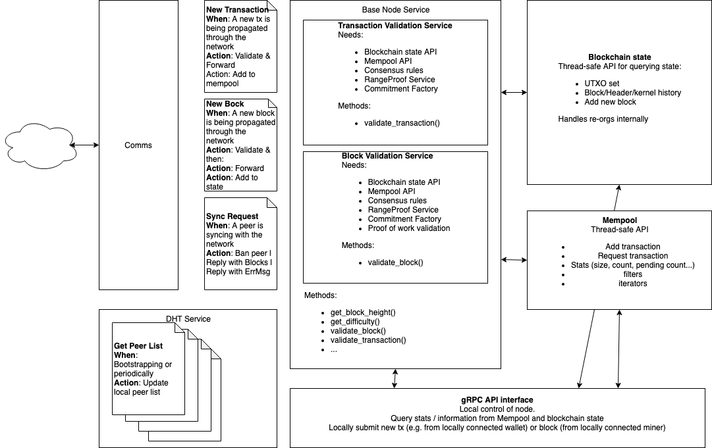

RFC-0111/BaseNodesArchitecture
Base Node Architecture

Maintainer(s): Cayle Sharrock
License
Copyright 2019 The Tari Development Community
Redistribution and use in source and binary forms, with or without modification, are permitted provided that the following conditions are met:
- Redistributions of this document must retain the above copyright notice, this list of conditions and the following disclaimer.
- Redistributions in binary form must reproduce the above copyright notice, this list of conditions and the following disclaimer in the documentation and/or other materials provided with the distribution.
- Neither the name of the copyright holder nor the names of its contributors may be used to endorse or promote products derived from this software without specific prior written permission.
THIS DOCUMENT IS PROVIDED BY THE COPYRIGHT HOLDERS AND CONTRIBUTORS "AS IS" AND ANY EXPRESS OR IMPLIED WARRANTIES, INCLUDING, BUT NOT LIMITED TO, THE IMPLIED WARRANTIES OF MERCHANTABILITY AND FITNESS FOR A PARTICULAR PURPOSE ARE DISCLAIMED. IN NO EVENT SHALL THE COPYRIGHT HOLDER OR CONTRIBUTORS BE LIABLE FOR ANY DIRECT, INDIRECT, INCIDENTAL, SPECIAL, EXEMPLARY, OR CONSEQUENTIAL DAMAGES (INCLUDING, BUT NOT LIMITED TO, PROCUREMENT OF SUBSTITUTE GOODS OR SERVICES; LOSS OF USE, DATA, OR PROFITS; OR BUSINESS INTERRUPTION) HOWEVER CAUSED AND ON ANY THEORY OF LIABILITY, WHETHER IN CONTRACT, STRICT LIABILITY, OR TORT (INCLUDING NEGLIGENCE OR OTHERWISE) ARISING IN ANY WAY OUT OF THE USE OF THIS SOFTWARE, EVEN IF ADVISED OF THE POSSIBILITY OF SUCH DAMAGE.
Language
The key words "MUST", "MUST NOT", "REQUIRED", "SHALL", "SHALL NOT", "SHOULD", "SHOULD NOT", "RECOMMENDED", "NOT RECOMMENDED", "MAY", and "OPTIONAL" in this document are to be interpreted as described in BCP 14 (covering RFC2119 and RFC8174) when, and only when, they appear in all capitals, as shown here.
Disclaimer
The purpose of this document and its content is for information purposes only and may be subject to change or update without notice.
This document may include preliminary concepts that may or may not be in the process of being developed by the Tari community. The release of this document is intended solely for review and discussion by the community regarding the technological merits of the potential system outlined herein.
Goals
Describe the high-level the Base Node architecture.
Architectural layout
The base node architecture is designed to be modular, robust and performant.

The major components are separated into separate modules. Each module exposes a public API which typically communicates with other modules using the Command Pattern.
Base Node Service
The Base Node Service is an instantiation of a Tari Comms Service, which subscribes to and handles specific messages coming from the P2P Tari network via the Comms Module of a live Tari communications node. The Base Node Service's job is to delegate the jobs required by those messages to its submodules, consisting primarily of the Transaction Validation Service and the Block Validation service.
The Base Node Service will pass messages back to the P2P network via the Comms Module based on the results of its actions.
The primary messages that a Base Node will subscribe to are:
-
NewTransaction: A New Transaction is being propagated over the network. If it hasn't seen the transaction before, the Base Node will validate the transaction and if it is valid:
- add it to its MemPool
- pass the transaction onto peers.
Otherwise the transaction is dropped.
-
NewBlock: A newly mined block is being propagated over the network, If the node hasn't seen the block before, the node will validate it. It's action depends on the validation outcome:
- Invalid block: Drop the block.
- Valid block appending to the longest chain: Add the block to the local state; propagate the block to peers.
- Valid block forking off main chain: Add the block to the local state; propagate the block to peers.
- Valid block building off unknown block: Add the orphan block to local state.
-
Sync Request: A peer is synchronising state and is asking for block data. The node can decide to
- ignore or ban the peer (based on previous behaviour heuristics)
- Try and provide the data, returning an appropriate response. Note that most nodes can only offer block data up until their pruning horizon. Only full archival nodes can return the full block history. See RFC-0140 for more details.
The validation procedures are complex and thus are encapsulated into their own sub-services. These services hold
references to the blockchain state API, the mempool API, a range proof service and whatever other modules they need to
complete their work. Each validation module has a single primary method, validate_xxx(), which takes in the
transaction or block to be validated and carries out the validation logic.
DHT Service
Peer discovery is a key service that blockchain nodes provide so that the peer mesh network can be navigated by the full nodes making up the network.
In Tari, the peer-to-peer network is used by more than just full nodes (Base Nodes), but also by Validator Nodes, and Tari and DAN clients.
For this reason, peer management is handled by the Comms layer internally. If a Base Node wants to propagate a message,
a new Block or Transaction, for example, it simply selects a BROADCAST strategy for the message and the comms layer
will do the rest.
When a node wishes to query a peer for it's peer list, this request will be handled by the DHTService. It will
communicate with its Comms module's Peer Manager, and provide that information to the peer.
Blockchain state module
The blockchain state module is responsible for providing a persistent storage solution for blockchain state data. For Tari, this is delivered using the memory-mapped database LMDB. LMDB is highly performant, intelligent and straightforward to use. An LMDB database is essentially treated as a hash map data structure that transparently handles memory caching, disk I/O, and multithreaded access.
The blockchain module is able to run as a standalone service. All communication with clients is done via message channels. This allows the blockchain state service to completely control and manage read and write access to the underlying blockchain state, reducing the scope for race conditions and deadlocks.
Since a message-based approach is employed, no read-write locks are required at the blockchain state module level.
Rust's channel infrastructure in the standard library is fairly limited. Therefore we propose to use the crossbeam-channel and crossbeam-queue libraries for managing message passing between the blockchain state module and its clients. Messages are constructed using Rust enums using the Command Pattern.
Inside the Blockchain state module, data access could be managed by a single thread. However, since we're managing requests via a single message queue, and LMDB can handle multiple thread access it is fairly straightforward to extend data access to multiple threads using a thread pool.
The blockchain state API will be fairly rich, since it will serve not only base nodes talking to the Tari P2P network, but also applications such as block explorers and monitoring programs via a gRPC interface.
A non-exhaustive list of methods the blockchain state module API will expose include:
- checking whether a given UTXO is in the current UTXO set
- requesting the latest block height
- requesting the total accumulated work on the longest chain
- request a specific block at a given height
- request the merklish root commitment of the current UTXO set
- request a block header for a given height
- request the block header for the chain tip
- validate signatures for a given transaction kernel
- validate a new block without adding it to the state tree
- validate and add a (validated) new block to the state, and inform of the result (orphaned, fork, re-org, etc)
Mempool module
The mempool module tracks (valid) transactions that the node knows about but that have not yet been included into a block. The mempool is ephemeral and non-consensus critical and as such may be a memory-only data structure. Maintaining a large mempool is far more important for base nodes serving miners than those serving wallets. A mempool will slowly rebuild after a node reboots.
That said, the mempool module must be thread safe. The Tari Mempool module handles requests in the same way as the Blockchain state module does: via crossbeam-channel queues. The mempool structure itself is a set of hash maps as described in RFC-0190. For performance reasons, it may be worthwhile using a concurrent hash map implementation backed by a thread pool, although a single thread may suffice.
gRPC interface
Base nodes need to provide a local communication interface in a addition to the P2P communication interface. This is best achieved using gRPC. The Base node gRPC interface provides access to the public API methods of the base node service, the mempool module and the blockchain state module, as discussed above.
gRPC access is useful for tools like local UIs to a running base node; client wallets running on the same machine as the base node that want a more direct communication interface to the node than the P2P network provides, third party applications such as block explorers, and of course, miners.